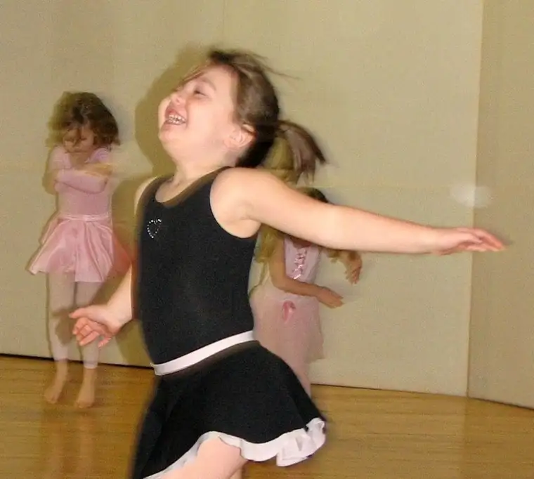
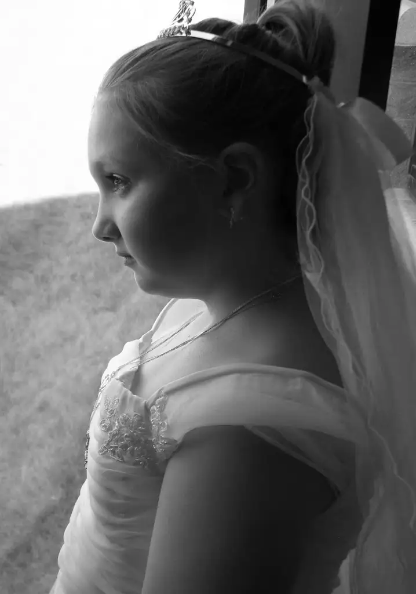
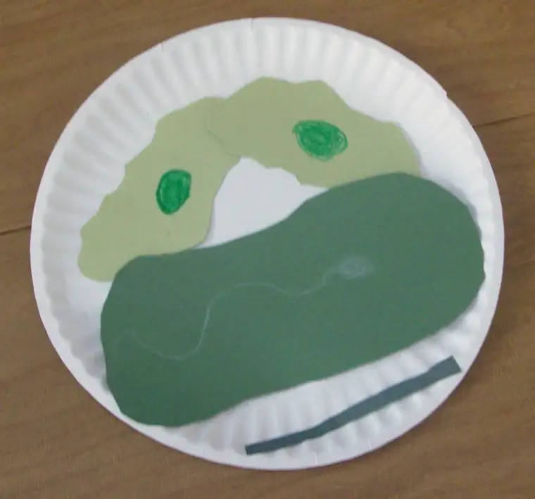
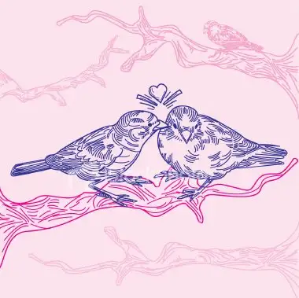

I’ve wanted to try Jennifer’s 7 Quick Takes Friday for a while. Here’s my first attempt. For more Friday Quick Takes, visit Conversion Diaries. Jennifer’s post for today includes a photo of her beautiful new baby girl.
{kind=link}
1) Ode to a faithful camera. I try to make my blog as visual as possible, but lately my camera has been on the blink. I’d been holding out hope it could be fixed. Earlier this week I stopped in at a camera repair store, and was shocked when, after careful study, the repair guy shook his head slowly and said, “I’m sorry, there’s nothing more that can be done.” I didn’t realize how attached I’d become to my camera over the last several years. I am still in mourning. Until I can find a replacement, I’ll have to make do with either posting old photos or borrowing images from other sources. Here’s one of those old photos, one of the first I took with my Canon in December 2005:

2) Hanging with Jesus. One of my favorite Lenten commitments had been the weekly reprieve in the Adoration chapel at our church, where I spend an hour with the Blessed Sacrament. I’ll be honest. The first time I did this several years ago, it felt a little strange sitting there in silence, simply absorbing the peace and hanging out with God. But now, I find it wonderfully restorative. I can pray, read and talk to God without interruption. How often do we allow ourselves such a luxury? And one that is so needed. I love it.
{kind=link}
3) Confirmation retreat for Beth. This weekend, Elizabeth will take part in a retreat to help prepare her and others who will be confirmed next month. I know that some struggle with the Church’s lean toward having earlier Confirmation (she’s in third grade). For me, it would be more of a challenge if I didn’t understand that: 1) Confirmation is not graduation (why not bestow the graces received in this Sacrament earlier in their lives? ) and 2) In the early church, the three Sacraments of Initiation (Baptism, Confirmation and First Eucharist) all happened in succession. It was only in later years they became separated. The original intent was that they happen close together. Having had two other third-graders Confirmed now, I like this change. Elizabeth has chosen the Confirmation name of Cecilia. Here’s a photo from Olivia’s Confirmation day a couple years ago:

{kind=link}
{kind=link}

5) Young Authors Conference. I’ll be making last-minute preparations this weekend for participation in a Young Authors Conference in Thief River Falls, Minnesota, on Tuesday. The theme of my presentation will be: Super Sleuth You: The Search for Idea Clues. Since the conference is for kids in grades 4-6, I’m bringing my fifth-grader along.
6) A kiss isn’t just a kiss. If you missed my post from earlier today, I hope you’ll take time to read now why that morning peck-on-the-cheek is more powerful than you probably realized.

7) Speaking of that…tonight is date night. Sometimes more than just a quick hug is in order. We’re leaving the kids at home and heading out for a night on the town. I started my morning with a hair appointment, my noon with a “friends” luncheon, and the sun was shining all day today. Not a bad Friday so far!
{kind=link}
Whew! I think I’d better consider shortening my “quick” takes a bit. Have a great weekend!